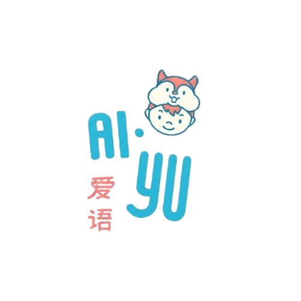

学Young learners
YCT
An engaging path for younger students to grow Mandarin step by step.

爱语 Ai YuLEARNING CENTRELet's talk ↗A warm, encouraging place to learn Mandarin—one useful word, confident conversation, and happy little breakthrough at a time.
At 爱语 Ai Yu Learning Centre, Mandarin is more than a subject—it’s a way to connect with people, culture, and new possibilities. We make learning feel approachable, purposeful, and rewarding.
Whether you’re just starting out or working toward an exam, we’ll help you build strong foundations and use Mandarin with growing confidence.
Build everyday skills, prepare for an exam, or bring Mandarin into your working life. Tell us what you’re aiming for.
An engaging path for younger students to grow Mandarin step by step.
Structured study to strengthen your skills and prepare for HSK exams.
Practical business Chinese for confident workplace communication.
Tap a card to reveal a little more.
Tell us your goals and we’ll help you find a class that fits.
Chat directly with Ai Yu on WhatsApp.